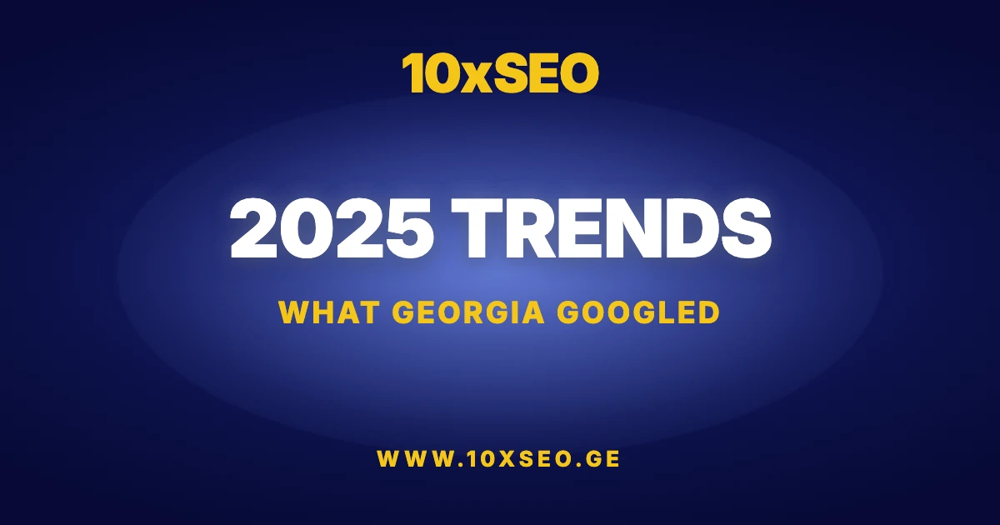

A country where shawarma outranks khinkali in search volume, and where "a mother's prayer" is Googled more often than many government services — that is Georgia's digital portrait for 2025.
To understand what is really happening behind screens, the 10xSEO team filtered Georgia's 30,000 most-searched keywords using Ahrefs data. Our goal was not simply to present dry statistics, but to understand how digital platforms have reshaped daily life, priorities, and psychology. This analysis shows what role the internet plays in Georgian society — from practical everyday needs to the paradoxical interests that most accurately describe the public mood.
Search Leaders: How Georgian Internet Users Start Their Day
The digital day begins pragmatically: Google Translate and weather forecasts sit at the very top of the search queue. But as soon as entertainment enters the picture, the numbers shift dramatically. Gambling platforms are the market's undisputed giants — Betlive (1.2M searches) and Adjarabet (1.1M) attract more users than any news outlet or government website in the country.
In everyday interests, searches cluster around weather (Amindi.ge), cars (MyAuto.ge), and films (Adjaranet). Notably, despite the availability of paid international platforms, Georgian users remain loyal to local sites — almost certainly driven by a preference for free content access.
One of the more curious data points is the phenomenon of the single letter "ყ" (the Georgian character corresponding to the Latin "Y"). On average, 19,000 people search for just this single character every month. The most likely explanation is straightforward: a large share of users want to reach YouTube but, with a Georgian keyboard layout active, only the first letter — "ყ" — registers in the search bar before they switch layouts.
Religion vs. Adult Content: Two Poles of the Georgian Web
The 10xSEO research reveals the most interesting findings through unexpected contrasts hidden behind the numbers. On the food front, shawarma is a more searched term than khinkali in 2025 — fast food has, for internet users at least, edged ahead of the traditional national dish.
Another striking reality is the sheer diversity of interests the search bar contains. These figures confirm once again that the Georgian user's digital agenda is never one-dimensional. The same search index holds religious queries and adult content, national pride and foreign entertainment, financial anxiety and entertainment escapism — all side by side.
Khvicha Kvaratskhelia: Georgia's Undisputed Search Champion
Georgia's internet has one central hero: Khvicha Kvaratskhelia. The numbers here exceed every expectation. Under various spellings and combinations, Khvicha/Kvara draws more than 112,000 monthly searches — making him the absolute record-holder. He is the only individual whose search interest in Georgia eclipses even global figures known in every corner of the world.
The data shows that for Georgian users, Khvicha Kvaratskhelia was the primary object of interest in 2025. He is searched 6x more often than Donald Trump (17,250 searches).
His search interest is nearly 8x that of Lionel Messi (14,900) and 11x that of Cristiano Ronaldo (9,750).
Perhaps most telling is the political contrast: Khvicha Kvaratskhelia's name is typed into Google 16x more often than "Irakli Kobakhidze" (7,200), while Putin (2,450) is almost invisible in Georgian search.
From Loans to Smartphones: Georgia's Commercial Search Priorities
Georgian consumer interests, from a commercial perspective, split into two radically different directions: technological aspiration and financial obligation. In the search bar, this reality translates into concrete numbers.
In 2025's technology market, the headline product is the iPhone 17. With more than 28,000 searches, it leads all commercial keywords. That fever translates directly into electronics retailers, where Zumer (90,350 searches) holds an unchallenged leadership position, followed at a meaningful distance by Eliti (34,400) and Alta (27,850).
Running parallel to this technology boom, the reality is strikingly pragmatic: the word "loan" — in its many variations (fast loan, online loan, installment plan) — ranks among the most frequent commercial keywords. If the iPhone 17 represents 2025's aspirational desire, the loan search represents the financial instrument Georgia uses to bridge the gap between desire and reality.
200 People and One Question: Does Free Money Exist?
Search data also exposes a quietly optimistic — and slightly naive — corner of the market. Each month, on average, around 200 people search for how to earn money by watching ads.
This small but consistent figure indicates that a segment of the population still maintains interest in so-called passive income schemes requiring minimal effort. Such searches often serve as bait for dubious platforms, but the very fact that demand exists accurately describes the socioeconomic expectations that a portion of internet users carried into 2025.
How Pharmacies and Delivery Platforms Divide the Digital Market
Some digital market segments resist clear domination. According to data processed by 10xSEO, competition is fiercest in the pharmaceutical sector: Aversi (34,000 searches) and PSP (33,000 searches) track each other step for step. By comparison, GPC (2,400 searches) occupies a considerably more modest position, suggesting the primary digital battle is a two-way fight between the two giants.
The delivery market presents a mathematically perfect mirror image. Glovo and Wolt each draw exactly 17,000 searches — splitting the market with striking symmetry. This statistical tie confirms that for Georgian consumers, these two platforms carry identical weight, and the choice between them is frequently determined not by brand loyalty but by whichever offers a better discount at that specific moment.
The Series War: Why Georgia Can't Quit Turkish Content
Georgian entertainment preferences in 2025 remain distinctly specific. In search statistics, Turkish drama series are the undisputed favorite — with a combined 208,500 searches, the genre outperforms every other entertainment category. The trend that established itself on local TV channels has fully migrated to the internet.
Turkish dramas face competition from international series, notably Squid Game with more than 106,500 searches. Beyond live-action series, anime culture claims a significant share of the search landscape — Naruto and One Piece are keywords tens of thousands of people search each month, pointing to the growing influence of that genre. In the film category, stable demand persists for historical epics: the sustained popularity of Gladiator confirms that premieres frequently bring audiences back to the classics alongside new releases.
The ChatGPT Era and Traditional Media
Any digital portrait of 2025 would be incomplete without artificial intelligence. Among AI platforms in Georgia's search landscape, ChatGPT is the absolute leader — capturing 66% of all AI-related searches in this segment. This signals that Georgian users are increasingly trusting algorithms to answer questions, process text, and complete tasks.
Yet when it comes to TV content, search volumes by broadcaster tell a different story:
- Imedi — 221,500 searches
- Mtavari Arkhi (First Channel) — 64,150 searches
- Rustavi 2 — 45,600 searches
- TV Pirveli — 40,650 searches
This data confirms a dual-track reality: users rely on AI for filtering information and technical tasks, but traditional broadcast platforms remain the primary destination for news and entertainment. ChatGPT and Imedi are not competing — they serve different needs, and Georgians are using both.
Georgia Through Google's Eyes
An analysis of 30,000 keywords reveals that Georgia in 2025 is a country of extraordinary contrasts, where the latest technological ambitions and deeply rooted traditional habits coexist in the same search bar. Through Google's lens, we are a people who ask ChatGPT for future predictions in the morning — then lose ourselves in the unending intrigues of Turkish dramas by evening.
Our digital portrait is mildly paradoxical: with one hand we count the megapixels on the iPhone 17's camera; with the other, we search for the optimal fast loan that might bring that dream within reach. Against the backdrop of this daily juggling act, these searches look less like dry statistics and more like a form of cognitive dissonance written in search queries.
In the same search bar, the euphoria of Khvicha Kvaratskhelia's global recognition and the tentative hope of earning something by watching ads coexist as naturally as breathing — as if Google's algorithm had long ago adapted itself to the Georgian national character.
Data sourced from Ahrefs keyword analysis.
Want to know where your brand stands in Georgia's search landscape?
Get a free 72-hour SEO audit — we'll show you which keywords your competitors own and exactly where the gaps are.
Frequently Asked Questions
What were the most searched keywords in Georgia in 2025?
According to Ahrefs data analyzed by 10xSEO, the top categories were: gambling platforms (Betlive at 1.2M, Adjarabet at 1.1M), utility tools like Google Translate and weather, automotive platforms (MyAuto.ge), and entertainment (Adjaranet). Khvicha Kvaratskhelia dominated personal search with 112,000+ monthly queries.
How popular is ChatGPT in Georgia compared to other AI tools?
ChatGPT accounts for approximately 66% of all AI platform searches in Georgia in 2025, making it the dominant AI tool in the country. Traditional TV channels still lead for news and entertainment, but for information tasks and content generation, Georgians are increasingly turning to AI.
What does Georgia's search data reveal about consumer behavior?
The data reveals a market of sharp contrasts: strong aspirational demand for iPhone 17 (28,000+ searches) alongside heavy search volume for fast loans and installment credit. Delivery platforms Glovo and Wolt draw exactly 17,000 searches each — a near-perfectly split market. Turkish drama series lead entertainment with 208,500 combined searches.
Why does a single Georgian letter generate 19,000 monthly searches?
The Georgian letter "ყ" corresponds to the Latin "Y" on a Georgian keyboard. When users begin typing "YouTube" with their Georgian keyboard active, only the first character registers before they switch layouts. This keyboard-switching artifact produces a steady 19,000 monthly searches for a single letter.
How does Khvicha Kvaratskhelia's search volume compare to global figures?
In Georgia's domestic market, Khvicha draws 112,000+ monthly searches — 6x Donald Trump (17,250), 8x Messi (14,900), and 11x Ronaldo (9,750). He also outpaces Georgia's Prime Minister Irakli Kobakhidze (7,200) by a factor of 16, and Putin (2,450) barely registers.
Ready to capture your share of Georgia's search traffic?
Talk to 10xSEO about SEO strategy built for the Georgian market. Free 15-minute consultation.
Book Free Consultation